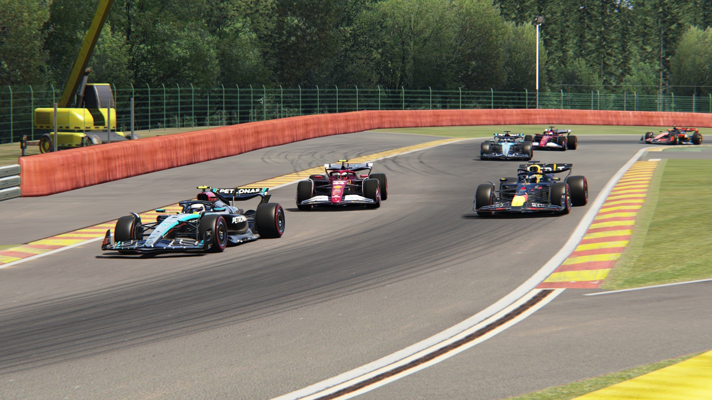

Javad Survives Monaco Chaos to Win After Double Multi-Car Crashes
Circuit de Monaco, Monaco - Round 10 of the 2027 Formula One World Championship
In one of the most chaotic Monaco Grands Prix in recent memory, Javad delivered a calm, calculated drive
to take victory on the streets of Monte Carlo — a race defined by two major multi-car accidents, early
drama, and an attrition rate that tore apart the midfield.
The race began with high tension even before lights out, as Verstappen lined up on pole alongside Javad,
with Leclerc and Russell forming an all-Ferrari second row behind them. But everything changed almost
instantly.
Lap 1: Tunnel Disaster — Four Cars Out Immediately
As the field blasted into the Monaco tunnel for the first time, George Russell lost control mid-corner,
triggering a heavy crash that collected several unsuspecting drivers behind him. Hamilton, Piastri, and
Bortoleto piled in with nowhere to go — all four retired instantly.
What was expected to be a tight and tactical Monaco race suddenly turned into a survival test.
This opened the door for Hulkenberg, who jumped multiple places to run inside the top five.
Lap 6: Norris vs. Tsunoda Ends in Tears
Just as the race began to settle, another dramatic moment unfolded. Norris and Tsunoda — battling
aggressively for fourth — collided at the second part of the Swimming Pool section. Both drivers slammed
into the barriers and retired on the spot.
With six cars eliminated in the opening laps, the race became a war of attrition, and surviving became
more valuable than speed.
Front-Running Battle: Verstappen Chases, Javad Controls
After the early chaos, Verstappen pressured Javad for several laps, trying to force an error. But the
Ferrari driver remained composed, gradually stretching his lead.
Leclerc, running third, was unable to match the leading pace but held steady to secure an important
podium on home soil.
Hulkenberg, now in unexpected territory, kept his Sauber clean and delivered a disciplined drive to
finish P4 — his best result of the season.
Final Classification:
1. Javad (Ferrari) — 13:30.200
2. Max Verstappen (Red Bull) — +13.233
3. Charles Leclerc (Ferrari) — +22.057
4. Nico Hulkenberg (Sauber) — +48.652
5. Lewis Hamilton (mercedes) — DNF
6. George Russell (mercedes) — DNF
7. Oscar Piastri (McLaren) — DNF
8. Gabriel Bortoleto (Sauber) — DNF
9. Lando Norris (McLaren) — DNF
10. Yuki Tsunoda (Red Bull) — DNF
Javad leaves Monaco with maximum points, strengthening his championship lead as the season heads into
its crucial middle phase.